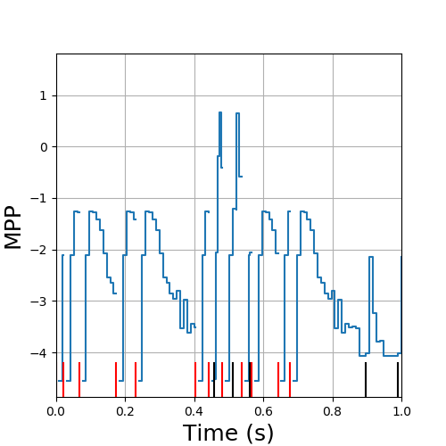

Spike Train Analysis: Tutorial
Table of Contents
1 Data used
1.1 Locust data
We are going to use spike trains recorded from the locust, Schistocerca americana, antennal lobe (the first olfactory relay of the insects). The raw extracellular data (before spike sorting) can be downloaded from zenodo: https://zenodo.org/record/21589. We are going to concentrate on data set locust20010214. The complete description of the sorting leading to the spike trains–that's a copy of my electronic lab-book–can be found on the dedicated GitHub site: https://christophe-pouzat.github.io/zenodo-locust-datasets-analysis/Locust_Analysis_with_R/locust20010214/Sorting_20010214_tetB.html.
A model with 10 units was used and the first 7 units are well isolated. The spike trains can be found on my dedicated GitHub repository: https://github.com/christophe-pouzat/zenodo-locust-datasets-analysis, more precisely at the following location: https://github.com/christophe-pouzat/zenodo-locust-datasets-analysis/tree/master/Locust_Analysis_with_R/locust20010214/locust20010214_spike_trains. The README file of the repository specifies that:
The spike trains in directory locustXXX_spike_trains are stored in ASCII format with one spike time (in seconds) per line. They are named locustXXX_StimID_tetY_uZ.txt, where XXX gives the experiment data and Y the tetrode label, StimID is a stimulation identifier (more precisely a group name in the HDF5 data file) and Z is the unit number. When several trials, like say 25 stimulation with citronelal, were recorded, the successive trials will be found one after the other and time 0 is defined as the start of the acquisition of the first trial.
1.2 Getting the data into Python
We start our Python session the "usual" way, loading our favorite modules:
import numpy as np import matplotlib.pylab as plt plt.ion() # to get interactive graphics
We download the data of the first neuron (unit 1) in the spontaneous regime "within" Python with:
from urllib.request import urlretrieve # Python 3 # from urllib import urlretrieve # Python 2 data_name = 'locust20010214_Spontaneous_1_tetB_u1.txt' data_src = 'https://raw.githubusercontent.com/christophe-pouzat/\ zenodo-locust-datasets-analysis/master/Locust_Analysis_with_R/\ locust20010214/locust20010214_spike_trains/\ locust20010214_Spontaneous_1_tetB_u1.txt' urlretrieve(data_src,data_name)
If you prefer using the command line, you can type:
wget https://raw.githubusercontent.com/christophe-pouzat/\ zenodo-locust-datasets-analysis/master/Locust_Analysis_with_R/\ locust20010214/locust20010214_spike_trains/\ locust20010214_Spontaneous_1_tetB_u1.txt
We then load the data into Python with:
u1spont = [float(line) for line in open("locust20010214_Spontaneous_1_tetB_u1.txt")] len(u1spont)
3331
So we have just read 3331 spike times. This spike times are in sampling units; that means we have to divide them by the sampling rate (15 kHz) to the times in seconds. We can check the "head" and the tail of the data we just loaded with:
u1spont[:10]
[4364.629, 49876.8, 50529.95, 50988.26, 51371.66, 51769.29, 52703.77, 54772.34, 56472.7, 71766.51]
and
u1spont[-10:]
[13442792.0, 13455679.0, 13458610.0, 13460049.0, 13460517.0, 13461154.0, 13464139.0, 13470059.0, 13471539.0, 13472243.0]
The successive acquisition epochs are one after the other, each acquisition was 29 seconds long with a 1 second gap between each acquisition. To convert our data into seconds we simply do:
u1spont = [x/15000 for x in u1spont]
We get our observed counting process plot with:
plt.step(u1spont,np.arange(len(u1spont))+1,where='post') plt.grid() plt.xlabel('Time (s)') plt.ylabel('Nb of evts')
Figure 1: The observed counting process from neuron 1 in the spontaneous regime. The two pauses are due to two "noisy" acquisition epochs during which sorting was impossible to do properly.
1.3 Cockroach data
Looking briefly at the cockroach data (recorded and sorted by Antoine Chaffiol) will be the occasion of dealing with an HDF5 file and of seeing some "nastier" example of spontaneous activity. Loading and manipulating such a file in Python requires the installation of the h5py module.
We start by downloading the data from zenodo:
from urllib.request import urlretrieve name_on_disk = 'CockroachDataJNM_2009_181_119.h5' urlretrieve('https://zenodo.org/record/14281/files/'+ name_on_disk, name_on_disk)
To load the data, we must import the h5py module (to learn h5py basics, consult the Quick Start Guide of the documentation):
import h5py
We then open out file for reading and get the data from Neuron1 in the spontaneous regime of experiment e060824:
f = h5py.File("CockroachDataJNM_2009_181_119.h5","r") n1_cockroach = f["e060824/Neuron1/spont"][...]
We make the observed counting process plot for this neuron:
plt.step(n1_cockroach,np.arange(len(n1_cockroach))+1,where='post') plt.grid() plt.xlabel('Time (s)') plt.ylabel('Nb of evts')

Figure 2: The observed counting process from neuron 1 in the spontaneous regime of experiment e060824. Data recorded and sorted from the cockroach Periplaneta americana by Antoine Chaffiol.
2 Simple Stochastic Neuronal Network Code Description
2.1 Introduction
2.1.1 Model considered
We are dealing with a stochastic intensity model, stochastic intensity that we are going to write \(\lambda(t\mid \mathcal{H}_t)\) and that we will get as a transformation of a "more basic" quantity, the membrane potential process (MPP), \(u(t\mid \mathcal{H}_t)\), as follows:
\begin{equation}\label{eq:MPP2lambda} \lambda(t\mid \mathcal{H}_t) \equiv \lambda_{max}\left(1+\exp -u(t\mid \mathcal{H}_t)\right)^{-1}\, , \end{equation}where \(\lambda_{max} > 0\) is a parameter allowing us to have the proper rate (in Hz).
We are going to write \(u(t\mid \mathcal{H}_t)\) as:
\begin{equation}\label{eq:u-definition-1} u(t\mid \mathcal{H}_t) \equiv s(t-t_l) + \sum_{j\in \mathbb{P}} \sum_{x \in T_{j}, x > t_l} g_{j}(t-x)\, , \quad \mathrm{for} \quad t > t_l\, , \end{equation}where \(t_l\) stands for the time of the last spike of the neuron of interest, \(\mathbb{P}\) is the index set of the neurons of the network that are presynaptic to the neuron of interest, \(T_{j}\) stands for the set of spike times of neuron \(j\), \(g_{j}(t-x)\) is the effect of a spike in neuron \(j\) at time \(x\), \(s(t-t_l)\) stand for the "self" or more appropriately "unobserved" effect; indeed in an actual setting, only a tiny fraction of the neurons of a network are observed, but we know from the biophysics of these neurons and from the anatomy and function of the first olfactory relay that 3 "factors" will contribute in making a neuron spike:
- The so called "intrinsic properties" of the neuron, that is, the set of voltage dependent conductances present in the neuron's membrane, as well as their localization (not to mention the actual geometry of the neuron…).
- The continuous asynchronous and "random" input the neuron gets from the olfactory receptors in the "spontaneous" regime. We know that this factor is a key contributor to the spontaneous activity in the first olfactory relay since this activity essentially disappear if we cut the antennal nerve (that is, the bunch of olfactory receptor axons entering into the first olfactory relay).
- The synaptic inputs from the other neurons of the network.
- Illustration
We are going to use piecewise constant functions for \(s(\,)\) and the \(g_j(\,)\). A "typical" \(s(\,)\) might look like:
s = [[0.01,-4.7],[0.02, -2],[0.03,-1.3],[0.04,-1.2],[0.05,-1.5], [0.06,-1.7],[0.07,-2.1],[0.08,-2.5],[0.09,-2.7],[0.10,-2.8], [0.11,-2.9],[0.12,-2.95],[0.13,-3.2],[0.14,-3.3],[0.15,-3.4], [0.16,-3.5],[0.17,-3.6],[0.18,-3.7],[0.19,-3.9],[ 0.2, -4]] plt.step([x for x,y in s]+[0.5], [y for x,y in s]+[-4], where='post',color='black') plt.grid(True) plt.xlabel("Time (s)",fontdict={'fontsize':18}) plt.ylabel("s(t-t_l)",fontdict={'fontsize':18})
And a typical \(g_j(\,)\) might look like:
g = [[0.0,0.0],[0.01,2.0],[0.02,0.8],[0.03,0.4],[0.04,0.4],[0.05,0]] plt.step([x for x,y in g], [y for x,y in g], where='post',color='black') plt.grid(True) plt.xlim(0,0.5) plt.xlabel("Time (s)",fontdict={'fontsize':18}) plt.ylabel("g_j(t)",fontdict={'fontsize':18})
2.2 Implementation
2.2.1 The approach
For the simulation, as well as for the (maximum likelihood) inference–they generate very similar problems–, we will adopt what as will refer to as the "membrane potential process viewpoint". By that we mean that each neuron of the network is primarily described by its membrane potential process that is updated when new events occur. "Event" means here:
- The neuron fires a spike and its MPP is reset to 0.
- Another neuron to which the neuron of interest is synaptically coupled fires a spike, leading to a time dependent change of the MPP (Eq. \ref{eq:u-definition-1}).
- More generally, since both the "self" effect and the synaptic effects are described by piecewise continuous functions (PCF), one of these PCF breakpoints is crossed and the MPP changes as a result.
From the software implementation viewpoint, the "future" of the MPP of a given neuron looks like a double set of pairs containing a breakpoint time and an associated MPP change. This "future" trajectory must be updated every time the neuron of interest fires or one of its presynaptic neuron fires. The update amounts in the first case to a reset to zero and the setting of a new sequence of pairs given by the \(s(\,)\) function and, in the latter case, to the insertion at the proper locations of the pairs associated with the appropriate \(g_j(\,)\) function. This necessity of inserting an a priori unknown number of breakpoints at a priori unknown times calls for a linked list data structure. This suggest using a programming language like C (because of the flexibility provided by the pointers) or Python because of its very efficient management of lists.
2.2.2 Simulating data with Python
We start by simulating an independent presynaptic train like we did with R and we compute at the end of the simulation the empirical mean and SD of the log of the simulated intervals (just to check that we get back the parameters we fed in):
from random import seed, gauss from math import exp, log from statistics import mean, stdev seed(20061001) n_pre = 2000 rp_pre = 0.015 mu_pre = -2.81 sigma_pre = 1.46 pre = [rp_pre+exp(gauss(mu_pre,sigma_pre)) for i in range(n_pre)] tps = 0 for i in range(1,n_pre): pre[i]+=pre[i-1] [mean([log(pre[i]-pre[i-1]-rp_pre) for i in range(2,len(pre))]), stdev([log(pre[i]-pre[i-1]-rp_pre) for i in range(2,len(pre))])]
We define now function get_next_spike that simulates the next spike time by:
def get_next_spike(t_now, pre_st=pre, auto=s, syn=g, l_max=100): """Generate next spike time by inversion. Paremeters ---------- t_now: the time of the last spike from the considered neuron pre_st: a list containing the presynaptic spike train. auto: a list of two elements lists containing breakpoints location and value on the right side of the breakpoints for the "self" effect of the considered neuron. syn: a list of two elements lists containing the effect of a presynaptic spike on the considered neuron membrane potential process. l_max: the maximal spike rate (in Hz) of the considered neuron. Returns ------- the next spike time """ from math import log,exp from operator import itemgetter auto_d = auto[:] auto_d = [auto_d[0]]+[[auto_d[i][0], auto[i][1]-auto[i-1][1]] for i in range(1,len(auto_d))] syn_d = syn[:] syn_d = [syn_d[0]]+[[syn_d[i][0], syn[i][1]-syn[i-1][1]] for i in range(1,len(syn_d))] Lambda = -log(random.random()) pre_after = [x for x in pre_st if x > t_now] rp = auto_d[0][0] # refractory period dmpp = [[a+t_now,b] for a,b in auto_d] # shift self effect by t_now for t_spike in pre_after: # for each presynaptic spike dmpp += [[max(a+t_spike,t_now+rp),b] for a,b in syn_d if a+t_spike > t_now] # add the synaptic effect dmpp = sorted(dmpp, key=itemgetter(0)) # put breakpoints in right order bp = [a for a,b in dmpp] # get breakpoints mpp = [b for a,b in dmpp] # get the "delta mpp" for i in range(1,len(mpp)): # get mpp (membrane potential process) trajectory mpp[i] += mpp[i-1] lambda_v = [l_max/(1+exp(-v)) for v in mpp] # go from mpp to lambda delta = [bp[i]-bp[i-1] for i in range(1,len(bp))] # get the intervals between successive breakpoints Lambda_v = [lambda_v[i]*delta[i] for i in range(len(delta))] # get dLambda at the breakpoints idx = 0 while Lambda_v[idx] < Lambda: Lambda -= Lambda_v[idx] idx += 1 return bp[idx] + Lambda/lambda_v[idx]
We use function get_next_spike just defined to simulate a postsynpatic train:
import random random.seed(20061001) t_now = 0 post = [t_now] while t_now < 375: t_now = get_next_spike(t_now) post += [t_now]
We make a quick and dirty test on the forward recurrence time. First we get the empirical mean recurrence time:
from statistics import mean, stdev frt = [min([x for x in post if x > t])-t for t in pre[:-13]] mean(frt)
0.21951218899900915
Next we use a MC method to get the mean frt and its SD under the null hypothesis:
random.seed(20110928) isi_pre = [pre[i]-pre[i-1] for i in range(1,len(pre))] nrep=100 frt_sim = [0 for i in range(nrep)] for i in range(len(frt_sim)): spre = random.sample(isi_pre,len(isi_pre)) for j in range(1,len(spre)): spre[j] += spre[j-1] spre = [t for t in spre if t < post[-1]] frt_sim[i] = mean([min([x for x in post if x > t])-t for t in spre]) from math import sqrt (mean(frt_sim),stdev(frt_sim)/sqrt(nrep))
(0.32675390581822855, 0.0014810427338481315)
So, we see that the observed mean recurrence time is much shorter than the one we would get under the null hypothesis.
2.2.3 Inference
Our inference will be done by maximizing the likelihood function or, more precisely, its logarithm (to be more precise we are going to minimize the opposite of the log-likelihood). We therefore need to define this likelihood.
We will have a common time resolution (or "binwidth") for our "self" and synaptic effects. This is parameter delta_t in the following function and that corresponds to 0.01 s (10 ms) in both our s and g above. The "self" and synaptic effects are specified by their ranges: two elements lists (parameters self_range and syn_range). Once we have the range and the binwidth, we get the breakpoints and we associate to each breakpoint a "delta value" giving the change brought to the membrane potential process (MPP) upon breakpoint crossing. The set of delta values (from the "self" and synaptic effects) are the differences of our model parameters.
Given a range and a binwidth we start by creating a set of breakpoints starting from the left boundary specified by the first element of the range with increments all equal to binwidth until the right boundary (of the range) is reached (or passed). If there are n bins with the range, there are n+1 breakpoints.
Next, using the two spike trains, the postsynaptic one (parameter post_train) and the presynaptic one (parameter pre_train), we construct a list of global breakpoints (we can view it as the convolution of the spike trains with their effects taking care of the special effect of the refractory period given by the left boundary of parameter self_range). We build, moreover, one list per model parameter (that is per breakpoint of the "self" and synaptic effects) containing the index of the elements of the global breakpoint list "belonging" to the considered parameter. This will allow us to update efficiently our MPP when we change the parameter values.
- A function returning the Membrane Potential Process
We define first a function that return a function (more precisely a closure and there are few peculiarities in the way Python deals with closures) that given a parameter vector returns the MPP as a list of two numpy arrays, one containing the breakpoints time and the other containing the MPP value on the right side of each breakpoint.
def mk_mpp(post_train=post, pre_train_list=[pre], delta_t=0.01, unobs_range=[0.01,0.2], syn_range=[0,0.05], lambda_max=100): """Returns an MPP function. Parameters ---------- post_train: a list with the postsynaptic spike times pre_train_list: a list of lists with the presynaptic spike times (one list per spike train) delta_t: the bin width in s for the self and the synaptic effects unobs_range: a two elements list with the range of the self effect syn_range: a two elements list with the range of the synaptic effect lambda_max: the maximal postsynaptic discharge rate Returns ------- A function (closure) that returns given a parameter vector a tuple of two numpy arrays containing the breakpoints locations and the MPP value on the right side of each breakpoint """ from math import inf,ceil from operator import itemgetter import numpy as np # define refractory period rp = unobs_range[0] # Create unobs_bk effect breakpoints list n_unobs = ceil((unobs_range[1]-rp)/delta_t)+1 n_total = n_unobs unobs_idx = list(range(n_unobs)) par_idx = unobs_idx unobs_bk = [rp+i*delta_t for i in unobs_idx] # Get the number of presynaptic spike trains n_pre = len(pre_train_list) if n_pre > 0: # There is a least one presynaptic train # Do the same for the synaptic effects n_syn = ceil((syn_range[1]-syn_range[0])/delta_t)+1 syn_idx = list(range(n_syn)) syn_bk = [syn_range[0]+i*delta_t for i in range(n_syn)] for pre_idx in range(n_pre): # Construct a list of model parameters indexes par_idx += [n_total+i for i in syn_idx] n_total += n_syn par_idx += [n_total] # Construct a list of lists with two elements: # a breakpoint location # an index of the model parameter to apply on the # right side of the breakpoint # Start with the contribution of the postsynaptic train # Every postsynpatic spike gives a breakpoint exactly at # the spike time and the n_total index (the largest index # value is associated to it) glb = [[t,n_total] for t in post_train] # Then each postsynaptic spike is followed by its "self" # or unobserved effect. for s_idx in range(len(post_train)-1): spike_time = post_train[s_idx] next_time = post_train[s_idx+1] glb += [[unobs_bk[i]+spike_time,unobs_idx[i]] for i in range(len(unobs_bk)) if unobs_bk[i]+spike_time < next_time] # Now add the contributions of the presynaptic trains if n_pre > 0: # there is at least one presynaptic train first_post = post_train[0] # first postsynaptic spike time last_post = post_train[-1] # last postsynaptic spike time for pre_idx in range(n_pre): # take each presynaptic train pre_train = pre_train_list[pre_idx] for s_idx in range(len(pre_train)): # Take each spike spike of pre_train pre_time = pre_train[s_idx] if (first_post < pre_time < last_post): # Get the post previous spike time left_time = max([t for t in post_train if t <= pre_time]) # Get the post next spike time right_time = min([t for t in post_train if t > pre_time]) glb += [[max(syn_bk[i]+pre_time,left_time+rp),syn_idx[i]+n_unobs+n_syn*pre_idx] for i in range(len(syn_bk)) if left_time + rp - delta_t < syn_bk[i]+pre_time < right_time] # Order glb based on breakpoints' times sglb = sorted(glb,key=itemgetter(0)) # Extract breakpoints time bp = np.array([a for a,b in sglb]) # Extract the model parameter index to apply # to the right of each breakpoint idx = np.array([b for a,b in sglb]) # Keep the indexes of the breakpoints marking # the postsynaptic spike times sp_idx = np.arange(len(idx))[idx==n_total] def mpp(par): """Returns the membrane potential process for a given value of 'par'. The 'par' vector is constructed by pasting the height of the unobserved effect to the height of the successive synaptic effects. Keep in mind that the unobserved effect has as many height as breakpoints, the last one gives the asymptotic value (giving the long tail Poisson behavior), the synaptic effects have one height parameter less than their number of breakpoints since we force the effect to come back to zero after the last breakpoint (so the zero being known is not included in the model parameters). Parameters ---------- par: parameter vector (see explanation above) Returns ------- A tuple with two numpy arrays having the same length, one with the breakpoints' times one with the membrane potential process value on the right side of the breakpoint. The membrane potential value following a postsynaptic spike is -inf. """ import numpy as np # Transform the model parameters into a 'working_par' # numpy array. The latter contains the difference # between successive step heights of the different # effects (unobserved, synaptic, etc) working_par = np.zeros(n_total+1) from math import inf # A breakpoint with label n_total signal # the occurrence of a postsynaptic spike # and is followed by a jump of amplitude # -inf working_par[-1] = -inf np_par = np.array(par) working_par[0] = par[0] working_par[1:n_unobs] = np.diff(np_par[:n_unobs]) # After the above command, working_par[0] is the same # as par[0], working_par[1]+working_par[0] is the same # as par[1], working_par[2]+working_par[1] is the same # as par[2], etc if n_pre > 0: # There is at least one presynaptic train g = np.zeros(n_syn) for pre_idx in range(n_pre): g[-1] = 0.0 left = n_unobs+(n_syn-1)*pre_idx right = n_unobs+(n_syn-1)*(pre_idx+1) g[:-1] = np_par[left:right] working_par[n_unobs+n_syn*pre_idx] = np_par[left] nleft = n_unobs+n_syn*pre_idx+1 nright = nleft+n_syn-1 working_par[nleft:nright] = np.diff(g) # Get MPP (membrane potential process) MPP = np.zeros(len(bp)) for i in range(n_total+1): MPP[idx==i] = working_par[i] #pdb.set_trace() for j in range(len(sp_idx)-1): MPP[(sp_idx[j]+1):sp_idx[j+1]] = np.cumsum(MPP[(sp_idx[j]+1):sp_idx[j+1]]) return (bp[:],MPP[:]) return mpp
We test out new function as follows:
mpp_test = mk_mpp() help(mpp_test)
Help on function mpp in module __main__: mpp(par) Returns the membrane potential process for a given value of 'par'. The 'par' vector is constructed by pasting the height of the unobserved effect to the height of the successive synaptic effects. Keep in mind that the unobserved effect has as many height as breakpoints, the last one gives the asymptotic value (giving the long tail Poisson behavior), the synaptic effects have one height parameter less than their number of breakpoints since we force the effect to come back to zero after the last breakpoint (so the zero being known is not included in the model parameters). Parameters ---------- par: parameter vector (see explanation above) Returns ------- A tuple with two numpy arrays having the same length, one with the breakpoints' times one with the membrane potential process value on the right side of the breakpoint. The membrane potential value following a postsynaptic spike is -inf.Next we get the membrane potential process corresponding to the true parameter values:
p0 = [h for t,h in s] + [h for t,h in g[:-1]] mpp_prev = mpp_test(p0)
We make a figure with the first second:
plt.step(mpp_prev[0],mpp_prev[1],where='post') plt.xlim(0,1) [plt.axvline(t,ymax=0.1,color='black') for t in pre if 0 <= t <= 1] [plt.axvline(t,ymax=0.1,color='red') for t in post if 0 <= t <= 1] plt.grid(True) plt.xlabel("Time (s)",fontdict={'fontsize':18}) plt.ylabel("MPP",fontdict={'fontsize':18})
- A function returning the opposite of the log-likelihood
Once the MPP is known, getting the log-likelihood is rather straight forward. We define a function returning such a function (or closure to be precise):
def mk_mll(post_train=post, pre_train_list=[pre], delta_t=0.01, unobs_range=[0.01,0.2], syn_range=[0,0.05], lambda_max=100): """Returns an minus log-likelihood returning function. Parameters ---------- post_train: a list with the postsynaptic spike times pre_train_list: a list of lists with the presynaptic spike times (one list per spike train) delta_t: the bin width in s for the self and the synaptic effects unobs_range: a two elements list with the range of the self effect syn_range: a two elements list with the range of the synaptic effect lambda_max: the maximal postsynaptic discharge rate Returns ------- A function (closure) that returns given a parameter vector the opposite of the log-likelihood """ from math import inf,ceil from operator import itemgetter import numpy as np # define refractory period rp = unobs_range[0] # Create unobs_bk effect breakpoints list n_unobs = ceil((unobs_range[1]-rp)/delta_t)+1 n_total = n_unobs unobs_idx = list(range(n_unobs)) par_idx = unobs_idx unobs_bk = [rp+i*delta_t for i in unobs_idx] # Get the number of presynaptic spike trains n_pre = len(pre_train_list) if n_pre > 0: # There is a least one presynaptic train # Do the same for the synaptic effects n_syn = ceil((syn_range[1]-syn_range[0])/delta_t)+1 syn_idx = list(range(n_syn)) syn_bk = [syn_range[0]+i*delta_t for i in range(n_syn)] for pre_idx in range(n_pre): # Construct a list of model parameters indexes par_idx += [n_total+i for i in syn_idx] n_total += n_syn par_idx += [n_total] # Construct a list of lists with two elements: # a breakpoint location # an index of the model parameter to apply on the # right side of the breakpoint # Start with the contribution of the postsynaptic train # Every postsynpatic spike gives a breakpoint exactly at # the spike time and the n_total index (the largest index # value is associated to it) glb = [[t,n_total] for t in post_train] # Then each postsynaptic spike is followed by its "self" # or unobserved effect. for s_idx in range(len(post_train)-1): spike_time = post_train[s_idx] next_time = post_train[s_idx+1] glb += [[unobs_bk[i]+spike_time,unobs_idx[i]] for i in range(len(unobs_bk)) if unobs_bk[i]+spike_time < next_time] # Now add the contributions of the presynaptic trains if n_pre > 0: # there is at least one presynaptic train first_post = post_train[0] # first postsynaptic spike time last_post = post_train[-1] # last postsynaptic spike time for pre_idx in range(n_pre): # take each presynaptic train pre_train = pre_train_list[pre_idx] for s_idx in range(len(pre_train)): # Take each spike spike of pre_train pre_time = pre_train[s_idx] if (first_post < pre_time < last_post): # Get the post previous spike time left_time = max([t for t in post_train if t <= pre_time]) # Get the post next spike time right_time = min([t for t in post_train if t > pre_time]) glb += [[max(syn_bk[i]+pre_time,left_time+rp),syn_idx[i]+n_unobs+n_syn*pre_idx] for i in range(len(syn_bk)) if left_time + rp - delta_t < syn_bk[i]+pre_time < right_time] # Order glb based on breakpoints' times sglb = sorted(glb,key=itemgetter(0)) # Extract breakpoints time bp = np.array([a for a,b in sglb]) # Extract the intervals between breakpoints dbp = np.diff(bp) # Extract the model parameter index to apply # to the right of each breakpoint idx = np.array([b for a,b in sglb]) # Keep the indexes of the breakpoints marking # the postsynaptic spike times sp_idx = np.arange(len(idx))[idx==n_total] def mll(par): """Returns the minus log-likelihood for a given value of 'par'. The 'par' vector is constructed by pasting the height of the unobserved effect to the height of the successive synaptic effects. Keep in mind that the unobserved effect has as many height as breakpoints, the last one gives the asymptotic value (giving the long tail Poisson behavior), the synaptic effects have one height parameter less than their number of breakpoints since we force the effect to come back to zero after the last breakpoint (so the zero being known is not included in the model parameters). Parameters ---------- par: parameter vector (see explanation above) Returns ------- The opposite of the log-likelihood. """ import numpy as np # Transform the model parameters into a 'working_par' # numpy array. The latter contains the difference # between successive step heights of the different # effects (unobserved, synaptic, etc) working_par = np.zeros(n_total+1) from math import inf from math import exp,log # A breakpoint with label n_total signal # the occurrence of a postsynaptic spike # and is followed by a jump of amplitude # -inf working_par[-1] = -inf np_par = np.array(par) working_par[0] = par[0] working_par[1:n_unobs] = np.diff(np_par[:n_unobs]) # After the above command, working_par[0] is the same # as par[0], working_par[1]+working_par[0] is the same # as par[1], working_par[2]+working_par[1] is the same # as par[2], etc if n_pre > 0: # There is at least one presynaptic train g = np.zeros(n_syn) for pre_idx in range(n_pre): g[-1] = 0.0 left = n_unobs+(n_syn-1)*pre_idx right = n_unobs+(n_syn-1)*(pre_idx+1) g[:-1] = np_par[left:right] working_par[n_unobs+n_syn*pre_idx] = np_par[left] nleft = n_unobs+n_syn*pre_idx+1 nright = nleft+n_syn-1 working_par[nleft:nright] = np.diff(g) # Get MPP (membrane potential process) MPP = np.zeros(len(bp)) for i in range(n_total+1): MPP[idx==i] = working_par[i] #pdb.set_trace() for j in range(len(sp_idx)-1): MPP[(sp_idx[j]+1):sp_idx[j+1]] = np.cumsum(MPP[(sp_idx[j]+1):sp_idx[j+1]]) lambda_v = lambda_max/(1+np.exp(-MPP)) Lambda = np.sum(lambda_v[:-1]*dbp) log_lambda = np.sum(np.log(lambda_v[sp_idx[1:]-1])) return Lambda - log_lambda return mll
We test our newly defined function inputting the actual parameter values:
mll_test=mk_mll() mll_test(p0)-4039.088966290414
We can then define a set of parameter values without synaptic coupling:
p1 = [h for t,h in s] + [0 for t,h in g[:-1]] mll_test(p1)
-3715.1865993384035
And we can optimize from this parameter with:
from scipy.optimize import minimize res = minimize(mll_test,p1,method='BFGS',options={'disp':True,'eps':1e-6,'gtol':1e-3})
Optimization terminated successfully. Current function value: -4049.213663 Iterations: 33 Function evaluations: 1242 Gradient evaluations: 46That looks fine so far!
2.2.4 Example of inference with Python
So let's do something looking more "real". We first consider our two spike trains in isolation and estimate their "self" of "unobserved" effect. We start with our pre train, as an initial guess we take the "exponential plus refractory period" estimate, that is a constant intensity following the escape from the refractory period.
refractory_period = s[0][0] n_isi_pre = len(pre)-1 pre_rate0 = n_isi_pre/(pre[-1]-pre[0]-n_isi_pre*refractory_period) pre_llf_0 = mk_mll(pre,[],0.01,[s[0][0],s[-1][0]],[0,0.05],100) from math import log pre_par0 = [-log(100/pre_rate0-1) for i in range(20)] pre_llf_0(pre_par0)
>>> >>> >>> >>> >>> -1445.5361688591559
We do the optimization:
pre_llf_0_fit = minimize(pre_llf_0,pre_par0, method='BFGS', options={'disp':True,'eps':1e-6,'gtol':1e-3})
... Optimization terminated successfully.
Current function value: -1914.802983
Iterations: 28
Function evaluations: 858
Gradient evaluations: 39
We can look at the fitted MPP as follows:
pre_mpp_0 = mk_mpp(pre,[],0.01,[s[0][0],s[-1][0]],[0,0.05],100)(pre_llf_0_fit.x) plt.step(pre_mpp_0[0],pre_mpp_0[1],where='post') plt.xlim(0.4,1.4) [plt.axvline(t,ymax=0.1,color='black') for t in pre if 0.4 <= t <= 1.4] plt.grid(True) plt.xlabel("Time (s)",fontdict={'fontsize':18}) plt.ylabel("MPP",fontdict={'fontsize':18})
Now we try a model for our pre spike train where our post train would be presynaptic to pre:
pre_llf_1 = mk_mll(pre,[post],0.01,[s[0][0],s[-1][0]],[0,0.05],100) pre_par1 = list(pre_llf_0_fit.x) + [0 for i in range(5)] pre_llf_1(pre_par1)
-1914.802982923095
We optimize:
pre_llf_1_fit = minimize(pre_llf_1,pre_par1, method='BFGS', options={'disp':True,'eps':1e-6,'gtol':1e-3})
... Optimization terminated successfully.
Current function value: -1919.563263
Iterations: 31
Function evaluations: 1269
Gradient evaluations: 47
We can divide the estimated values of the last 5 parameters (corresponding to the coupling effect post -> pre) by their estimated standard error, we get:
pre_llf_1_fit.x[20:]/np.sqrt(np.diag(pre_llf_1_fit.hess_inv)[20:])
array([-2.35955805, -1.42955242, -0.62587496, -0.73246774, 1.37764567])
We see that none passes the 99% confidence interval.
We repeat this analysis reversing the roles of pre and post. We start with the unobserved effect:
n_isi_post = len(post)-1 post_rate0 = n_isi_post/(post[-1]-post[0]-n_isi_post*refractory_period) post_llf_0 = mk_mll(post,[],0.01,[s[0][0],s[-1][0]],[0,0.05],100) post_par0 = [-log(100/post_rate0-1) for i in range(20)] post_llf_0(post_par0)
>>> >>> -2512.185863857879
We do the optimization:
post_llf_0_fit = minimize(post_llf_0,post_par0, method='BFGS', options={'disp':True,'eps':1e-6,'gtol':1e-3})
... Optimization terminated successfully.
Current function value: -3764.533935
Iterations: 29
Function evaluations: 880
Gradient evaluations: 40
fig = plt.figure(figsize=(5,5))
post_mpp_0 = mk_mpp(post,[],0.01,[s[0][0],s[-1][0]],[0,0.05],100)(post_llf_0_fit.x) plt.step(post_mpp_0[0],post_mpp_0[1],where='post') plt.xlim(0,1.0) [plt.axvline(t,ymax=0.1,color='black') for t in post if 0 <= t <= 1] plt.grid(True) plt.xlabel("Time (s)",fontdict={'fontsize':18}) plt.ylabel("MPP",fontdict={'fontsize':18})
plt.savefig('imgs/post_unobs_estimation_fig.png') plt.close() 'imgs/post_unobs_estimation_fig.png'
Now we try a model for our post spike train where our pre train would be presynaptic to post:
post_llf_1 = mk_mll(post,[pre],0.01,[s[0][0],s[-1][0]],[0,0.05],100) post_par1 = list(post_llf_0_fit.x) + [0 for i in range(5)] post_llf_1(post_par1)
-3764.5339354767257
We optimize:
post_llf_1_fit = minimize(post_llf_1,post_par1, method='BFGS', options={'disp':True,'eps':1e-6,'gtol':1e-3})
... Optimization terminated successfully.
Current function value: -4049.213663
Iterations: 33
Function evaluations: 1188
Gradient evaluations: 44
fig = plt.figure(figsize=(5,5))
post_mpp_1 = mk_mpp(post,[pre],0.01,[s[0][0],s[-1][0]],[0,0.05],100)(post_llf_1_fit.x) plt.step(post_mpp_1[0],post_mpp_1[1],where='post') plt.xlim(0,1) [plt.axvline(t,ymax=0.1,color='black') for t in pre if 0 <= t <= 1] [plt.axvline(t,ymax=0.1,color='red') for t in post if 0 <= t <= 1] plt.grid(True) plt.xlabel("Time (s)",fontdict={'fontsize':18}) plt.ylabel("MPP",fontdict={'fontsize':18})
plt.savefig('imgs/post_full_estimation_fig.png') plt.close() 'imgs/post_full_estimation_fig.png'

We can check the difference between the true coupling and the estimated one (dividing the difference by the estimated standard error of the latter):
(np.array([b for a,b in g[:-1]])-post_llf_1_fit.x[20:])/np.sqrt(np.diag(post_llf_1_fit.hess_inv)[20:])
array([-0.43685691, 0.92958674, -0.35390641, 0.89741912, 0.77982613])
That's fine the difference is always smaller than one sigma!